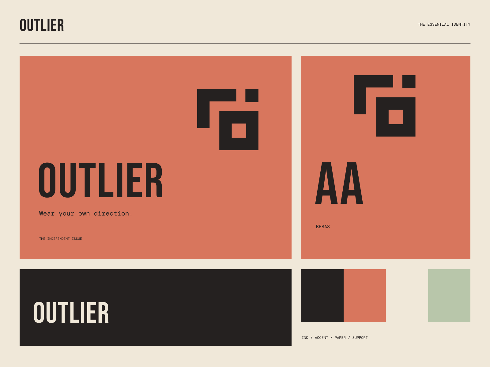

01
A different silhouette
Form with a distinct position and a useful place in your everyday.
INDEPENDENT BY DESIGN / NO STANDARD ISSUE
Wear your own direction. Made for your own direction.
A coherent little world
Made for your own direction. Wear your own direction.
01
Form with a distinct position and a useful place in your everyday.
02
Graphic construction that follows the idea all the way through.
03
An independent starting point, not a prescribed identity.

The point of view
Displaced registration blocks, garment-label grids, graphic material folds, and severe condensed lettering. An intentionally unstandard streetwear system with clear functional details.